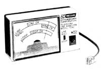

Now's your big chance: With a little bit of learning and less- than $100, you can start...
Are you one of the many people who are searching for the perfect bootstrap business ... an enterprise that puts you in touch with people, costs less than $ 100 to start, requires almost no inventory, and has flexible hours? Well, I think I've found it! You see, thanks to the recent divestiture of dear ol' Ma Bell, we've all been offered a once-in-a-lifetime business opportunity.
Until January of this year, only folks connected with the Bell firm were permitted to work on your telephone. All that's changed, though. It's now legal for anyone to install and maintain his or her phone-or (and here's the business angle) to hire an independent contractor to do the job. Believe it or not, that free-lance phone-installer could be you!
Let's face it: Few people want to get their hands into the actual mechanics of a telephone, so they're perfectly willing to pay to have someone else do the work for them. With a minimal outlay of cash and time, you can start installing telephones for your friends and neighbors. And the profits can be high. For example, in just 30 minutes you can earn $15-simply by putting in an extension phone. What's more, the work isn't at all hard to do. Anyone who's ever wired a lamp can pick up the art of telephone installation quickly.
THE BASICS
Telephone service, which is the main work you'll do initially, is divided into two major duties. First, there's the actual installation of phones, which amounts to wiring outlets in a house and connecting the telephones to those components. Whether you're installing new service or simply adding an extension, this procedure will probably account for the bulk of your business.
In addition to installation, though, you'll probably have to do a little bit of troubleshooting ... and occasionally have to make minor repairs when a system won't work. This isn't particularly difficult, nor does it require any specialized knowledge or equipment-as you'll soon discover. Later on, you may wish to expand your horizons by taking on the actual repair of telephones, but this lucrative field will require additional equipment and experience.
INSTALLATION
Most of the actual work involved in installing one or more telephones in a building involves routing cables properly. Start by developing a plan with the customer. Find out what he or she has in mind, make sug gestions, and develop a mental layout of the arrangement.
Once you and the client have agreed on the particulars, transfer your thoughts to paper. From here on, your main responsibility will be to run the telephone wires accurately (and as inconspicuously as you can). The following suggestions should help.
Make your wire runs as short as possible, but keep them out of sight. Not only will you save time and materials, but you'll also win the respect of the customer by providing a custom look to the job. Make use of attics, basements, and crawl spaces whenever possible. If it's necessary to run wires along an inside wall, conceal them behind baseboards and molding. Nothing looks less professional than a wire strung along the flat of a wall.
Above all, never run wires under carpets or across walkways. The fastest way to go out of business is to have a customer trip over an exposed cord and present you with a lawsuit instead of a check!
Tack the phone cable in place with rounded staples, not flat ones. The curved fasteners cost a little more, but they'll save you time and frustration in the long run-especially since a flat staple can cut through a wire and short a circuit. Place the fasteners at threefoot intervals and at every turn and corner. (A staple gun will save you a lot of time.)
Sometimes you'll be asked to run wires outside a house. If this involves crossing a yard or field, it's best to bury the cable. Don't dangle the wires in the air; such installations tend to be insecure and unsightly, and electrical codes often prohibit them. Note, too, that burial requires a special cable, with different specifications from the indoor kind, and will also demand a bit more elbow grease.
When the wires are in place, you can install the phone jacks. There are two types: One, the conventional box type, mounts to the surface of a wall or baseboard; the other, the flat wall plate, fits into the wall. Wall plates are a little more expensive and take longer to install, but they provide a cleaner final installation because the outlet is flush with the wall. Of course, because of these factors, you should charge more for a wall plate installation. In either case, use the new, modular RJ-11 jacks unless the customer specifically requests something else.
The actual wiring of a jack involves only four connections, and complete instructions for the operation were given in "Install Your Own Telephone(s)!" in MOTHER NO. 86, page 144.
THE FINAL HOOKUP
Once you've finished the wiring, you'll be ready to put in the phone(s). This is done with an extension cord that plugs into the back of the telephone and into the wall jack. Some phones come with their own extension cords; others don't. In the latter case, you'll have to supply one.
Rather than carry a large selection of prefabricated extension cords in inventory, though, I suggest that you invest in a roll of wire and a crimping tool. That implement should cost less than $10, and the plugs sell for about 25 cents apiece. It only takes a minute to cut the cord to length and attach the connectors, and you'll save inventory and impress your customer with a custom installation. (Don't forget to charge a little extra for this service!)
After you've connected the phone, lift the receiver and listen for the dial tone. Then call a friend or the operator for a final check on the quality of the line. If there is no tone or if your call won't go through, you have a problem.
REPAIRS
And this brings us to the second of the services you can offer: telephone repair. There are two ways in which you could become involved in repairs. First, it could be that your installation is at fault, in which case, of course, you'd be obliged to fix it at no charge. Then again, you might be called out to repair a phone that's gone dead.
The best way to test a telephone line is simply to attach a phone to it and listen for a dial tone. Don't, however, rely on the integrity of the customer's equipment for this test. You can purchase a plug-in phone from any hardware or discount store for under $10, and I recommend that you carry one at all times.
Plug your test phone into the jack, then listen. If the tone is missing, it's a safe bet that the problem is in the line. Check your work before examining the phone company's input block. (It also wouldn't hurt to ascertain that service actually has been turned on to the customer; this could save you a lot of time.)
If you've determined that the problem is in the customer's wiring, start at the beginning and trace the circuit, looking for breaks, shorts, and crossed wires. An inexpensive volt/ohm meter (VOM) can be very helpful at this stage. Also look for broken connectors and defective parts. If you have any doubts about a part, replace it.
In the event that you decide that the phone company's wires are at fault, contact their office, and they'll make the repair free of charge. just be reasonably sure that your diagnosis is correct, because if they find the problem to be in your work in the house wiring, the customer will have to foot the bill. And that will reflect badly on you.
A timesaving (and possibly face-saving) device that's just come out is a telephone analyzer made by B&K Precision. This inexpensive ($19.95) meter tests all the functions of a phone line and quickly pinpoints any faults. It's easy to use and does not require batteries.
Should you find that your test phone works but the customer's doesn't, the problem lies inside your client's telephone, and suddenly you have an excellent opportunity to expand your range of services. No, you don't have to fix the faulty phone yourself (unless you feel qualified to do so), but you can actually make money by having it done.
In effect, you can farm out such work to a qualified service shop. Many TV repair businesses are now taking in telephone repairs as an added source of income, and it shouldn't be hard to strike a deal with a firm in your area. Have them fix the defective phone, and you can reinstall it when it's repaired. Your customer will be happy with a job well done, the repair shop will be pleased about the extra income, and you can add a service fee to your bill.
PRICES
The amount that you'll be able to charge for your services will depend on the prevailing rates and competition in your area. For the time being, your only competitor will be your local phone company, so you can set your rates according to their schedule.
To give you an idea of how charges run in my area, I called my phone company and was given the following figures: They'd charge $50.66 to install one jack in my home as a new installation. However, $23.00 of this fee for turning on the switch in the main office s so they'd actually charge only $27.66 to install the jack, while their extension jacks would be billed at a flat $19.91. This means that a normal installation, with one extension, would run the customer $47.57, exclusive of the turn-on fee.
Now, performing that sort of installation should take you about an hour and will require approximately $7.00 worth of materi als. A gross income of $40.00 per hour isn't bad, but you'll also have to consider your overhead-such as travel time, gas, tools, etc.
You can either match or beat the phone company's service prices. If your local company is trying to keep costs to customers down, you'll be forced to follow their lead in order to get much business. On the other hand, if they've decided to jack up their rates because they figure they're the only game in town, then you can give both your customers and yourself a good deal.
Whatever price structure you choose, your next step will be to let the public know that you can do the job. Telephone work has been Ma Bell's exclusive territory for so long that it's second nature for most people to contact the phone company to request service. It'll be your job to educate your customers . . . to let them know that you can do the work and that you can probably do it better.
As your business grows, you'll probably want to add services. Telephone repair, as I noted before, is an excellent place to start, and it requires only a few months of training to master. Retail sales is another lucrative area: By building an inventory of phones, accessories, and attachments-such as answering machines-you may well be able to add handsomely to your profits.
The important thing is to get yourself firmly established in this infant industry right now. With a headstart, you should be able to watch your firm grow right along with (or out infront of) this vital service business.
I'm often asked what electrical safety precautions should be taken when working on telephone wires. After all, it's been pointed out that the wires docarry electricity. Well, that's true, but they don't handle much power.
The present system operates on 48 volts DQ which isn't enough for you to even feel if you contact it. The ringer bell, on the other hand, is activated by a 10-cycle AC voltage that exceeds 100 volts.
If you should happen to be touching both phone wires when a call comes in, you could receive a small shock-one that's more like a tingle. Trust me, though, it's not harm ful. It may be a little unpleasant, but it won't do any harm. And, to avoid the situation altogether, you simply have to remember to work with only one wire at a time.
EDITOR'S NOTE: In this and other articles, the listing of Radio Shack part numbers is not intended, by either the author or MOTHER, as an endorsement of Radio Shack products.
|
 |
|
|